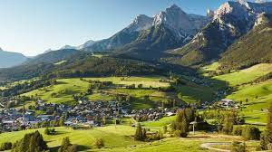

Austria

Austria offers alpine scenery, world-class museums, cobbled quaintness, and Wiener schnitzel. Unlike Germany, its industrious neighbor to the northwest, Austria is content to bask in its good living and elegant, opulent past as the former head of one of Europe's grandest empires. Austrians tend to be relaxed, gregarious people who love the outdoors as much as a good cup of coffee in a café.
Germany
Germany is blessed with some of Europe's most high-powered sights. There's spectacular scenery — the jagged Alps, flower-filled meadows, rolling hills of forests and farms, and mighty rivers — dotted all over with castles and churches of every variety. In Deutschland's idyllic half-timbered villages, you can enjoy strudel at the bakery or sip a stein of beer while men in lederhosen play oompah music.
Italy

Italy has Europe's richest culture. After all, this nation is the cradle of European civilization — established by the Roman Empire and carried on by the Roman Catholic Church. As you explore Italy, you'll stand face-to-face with some of the world's most iconic images from this 2,000-year history: Rome's ancient Colosseum and playful Trevi Fountain, Pisa's Leaning Tower, Florence's Renaissance masterpieces (Michelangelo's David and Botticelli's Venus), and the island city of elegant decay — Venice. Beyond these famous sights, though, Italy offers Europe's richest culture. Traditions still live within a country that is vibrant and fully modern.
Customer Reviews
The best trip I have ever taken.
 Ted E. Baer
Ted E. Baer
Moose Jaw, WY
TravelEU provides excellent guides for each stop.
Allie Gator
Dinosaur, CO
Don't miss the gondola ride om the grand canal in Venice.
Pete Zah
Okay, OK